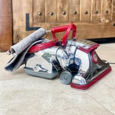
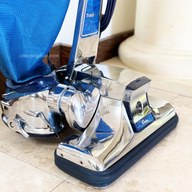
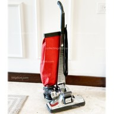
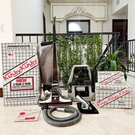
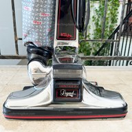
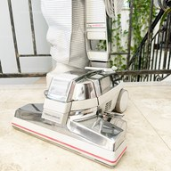

An interactive reference resource for Kirby collectors, refurbishers, and historians.
List of Kirby Models
Models from 1915–1934, such as The Vacuette, were marketed under Scott & Fetzer Co.
James B. Kirby designed machines until the Dual Sanitronic 50. He died in 1971.
| Year | Model | Image | Notes | Owners Manuals | Service Manuals |
|---|---|---|---|---|---|
| 1934–1935 | C/R | First Kirby branded machine. Model R was sold at retail with a handle switch. | C · R | — (Use 505–562 Service Manual) |
|
| 1935–1937 | 1C/1R | Added headlight, and bakelite belt lifter cover emblem instead of brass. | 1C · 1R | — (Use 505–562 Service Manual) |
|
| 1937–1939 | 2C/2R | Introduced streamlined 5xx-style headlight and front nozzle. | 2C · 2C (alt) | — (Use 505–562 Service Manual) |
|
| 1939–1940 | 3C/3R | New 10-blade fan, rear axle integrated into motor housing. | 3C | — (Use 505–562 Service Manual) |
|
| 1940–1941 | 4C/4R | More powerful motor, larger Emptor. | 4C · 4R · 4R (alt) | — (Use 505–562 Service Manual) |
|
| 1945–1947 | 505 | 1945 copy of 4C due to World War II, 1946+ added patented "Magic Finger". | 1945 · 1946 · 1947 | 505 – 562 | |
| 1948 | 508 | New Red/Black color scheme, introduced "Kirby Kabinet" attachment storage cabinet. | Manual | ||
| 1949 | 509 | Smaller bag size. Introduced "Suds-O-Gun" upholstery cleaner dispenser, and "Handi-Butler" polisher. | Manual | ||
| 1950 | 510 | Introduced "Sweet-Aire" scent dispenser and ball-chain cuff-slide bag holder. | Manual | ||
| 1951 | 511 | Almost identical to 510 due to Korean War. | Manual | ||
| 1952 | 512 | Added Sanitation Kit; front wheel bracket and Handi-Butler made of inferior metal. | Manual | ||
| 1953 | 513 | Added more red to plastic parts, new Kirby logo. | Manual | 513 | |
| 1954 | 514 | Cord improvements, including flip-down cord hook on handle. | Manual | 505 – 562 | |
| 1955 | 515 | Bag and wheels now matte gray, a scheme that continued until the 561. | Manual | ||
| 1956 | 516 | "50th Anniversary", switch integrated into motor housing, for aesthetics and safety. | Manual | 516 | |
| 1957 | 517 | Vinyl hose and better plastic for attachments. | Manual | 505 – 562 | |
| 1958 | 518 | Stylistic enhancements, Handi-Butler improved. | Manual | ||
| 1959 | 519 |  |
Carbon brushes no longer screw in from outside the motor housing. | Manual | |
| 1960 | 560 | Handle grip painted metal, brighter red on plastic trim. | Manual | ||
| 1961 | 561 | Handle grip now plastic, motor vent more chevron-like. | Manual | ||
| 1962 | 562 "Sanitronic" | Unique brown/white style, first with "Sanitronic" name. | Manual | ||
| 1963–1965 | Sanitronic VII | Hose introduced new universal blower/suction coupling. | Manual | VII – 1-CB | |
| 1965–1967 | Dual Sanitronic 50 | Introduced dual speed motor. Advertised as doing "50 different tasks" around the house. | Manual | ||
| 1967–1970 | Dual Sanitronic 80 | Has '60s avocado green theme. Advertised as doing "80 different tasks" around the house. | Manual | ||
| 1970–1973 | Classic 1CR | Redesigned motor housing, "Generation 2" Kirby design that lasted until Legend II. New Kirby logo from 1969. | 1971 · 1972 | ||
| 1973–1976 | Classic Omega 1-CB | Introduced double-insulated motor and plastic headlight cap. | Early · Late | ||
| 1976–1979 | Classic III 2-CB | All red color scheme, redesigned plastic belt lifter. | Apr 1978 · Oct 1978 · Alt | Parts List (Use VII–1-CB Service Manual) |
|
| 1979–1981 | Tradition 3-CB |  |
All blue color scheme, introduced replaceable paper bags (Style 1 bags). | 1979 · 1981 | Parts List (Use VII–1-CB Service Manual) |
| 1981–1983 | Heritage 1-HD |  |
Added more attachments, and better Style 2 bags. There was also a rare '84 variant. | 1981 · 1982 · 1983 · Super Renovation · Home Turbo · Handi Butler | Heritage & Heritage II |
| 1984–1986 | Heritage II 2-HD |  |
Introduced "Mini-Emptor" and Style 3 bags. | 1984 · 1986 · Split Second | |
| 1987–1989 | Heritage II Legend |  |
AKA "Legend I". Hose ends now sadly plastic instead of metal. | Manual | Parts List (Use Heritage II Service Manual) |
| 1989–1991 | Legend II | Maroon color scheme, last to have shake-out bag option, and last of the "classic" Kirbys. | Manual · Vacuette | ||
| 1990–1993 | G3 |  |
Introduced Micron Magic twist-on bags + self-propel "Tech Drive". "Generation 3" design that builds on Classic 1CR "Gen 2" design. | Manual | G3 – Sentria Parts List |
| 1993–1997 | G4 | Improvements to Tech Drive and handle tilt latch. | Manual | ||
| 1997–1999 | G5 | Multiple design tweaks, NASA-designed fan system. | Manual | ||
| 1999–2001 | G6 | Introduced Style F HEPA bags, which are backwards compatible to G3. | Manual | ||
| 2002–2003 | Ultimate G G7 | Improved brushroll and airflow, introduced matte gray scheme to blend into any room. | Manual | ||
| 2003–2006 | Diamond Edition | Final iteration of the G series, last with coin slot, arguably the best model to get secondhand for real cleaning. | Manual | ||
| 2006–2012 | Sentria | More modern handle, lighter design (more plastic). | Manual | ||
| 2012–2014 | Sentria II | Return to brown bag/trim scheme. Mini-Emptor becomes smaller (size used today). | Manual | — (Dump needed) |
|
| 2014–2018 | Avalir | Avalir starts the modern era, although this first incarnation is known to have reliability problems. | kirby.com Link | — (Unavailable) |
|
| 2018–2024 | Avalir 2 | 2nd incarnation of the Avalir with a blue and black color scheme; still commonly sold. | kirby.com Link | — (Unavailable) |
|
| 2024–2026 | Avalir Platinum | Latest model, return to black/chrome scheme of 505. Includes sound dampening system. | kirby.com Link | — (Unavailable) |
{kind=link}
{kind=link}
{kind=link}
{kind=link}
{kind=link}
{kind=link}
{kind=link}
{kind=link}
{kind=link}
{kind=link}
{kind=link}
{kind=link}
{kind=link}
{kind=link}
{kind=link}
{kind=link}
{kind=link}
{kind=link}
{kind=link}
{kind=link}
{kind=link}
{kind=link}
{kind=link}
{kind=link}
{kind=link}
{kind=link}
{kind=link}
{kind=link}
{kind=link}
{kind=link}
{kind=link}
{kind=link}
{kind=link}
{kind=link}
{kind=link}
{kind=link}
{kind=link}
{kind=link}
{kind=link}
{kind=link}
{kind=link}
{kind=link}
{kind=link}
Extras
James Kirby: The Man that Revolutionized the American Home (Lowell Thomas, 1935)
Kirby 510 "Proof" Booklet (1950)
Kirby 513 Launch Booklet (engineering dept. 1953)
Scott & Fetzer Manual (pre-Kirby era)
Keystone Vacuette Manual (non-electric, pre-Kirby era)
Keystone Models B & J Manual (pre-Kirby era)
Keystone Model E Manual (equivalent to Kirby Model R)
Patent US 2,648,396 (1953)
James B. Kirby portrait painting (Walter H. Chapman)
Check what year/model your bag is at collectingdust.com/bags-bags-bags.